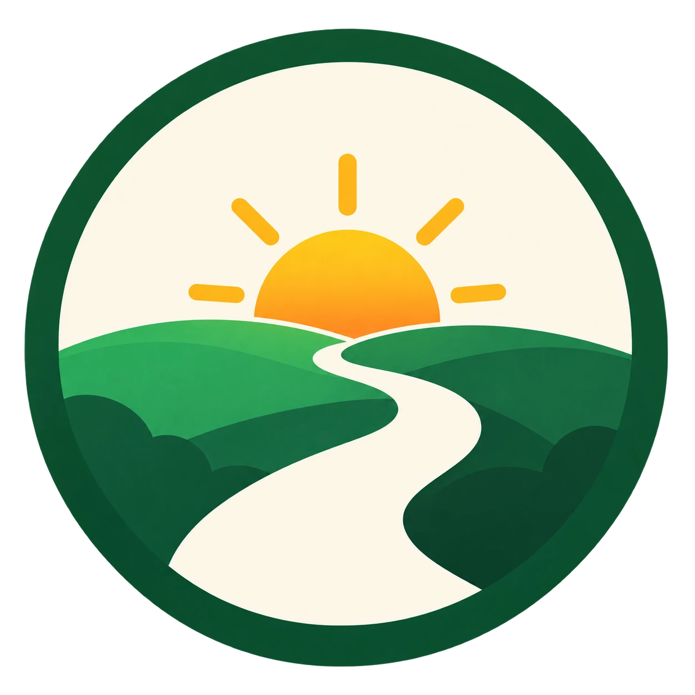

Social survival guide
Replacing the ritual of drinking and having a clear plan for social situations are often the keys to a good evening.
Smart alcohol-free alternatives
Much of the craving comes from the habit of holding a glass and enjoying a drink with a bit of bite.
- Ginger beer: The sharp ginger gives a satisfying kick in your throat, similar to alcohol, so you naturally drink it more slowly.
- Kombucha: Fermented tea with a tangy, lightly sparkling and grown-up taste. It feels like a proper alternative to wine or cider.
- Alcohol-free beer: The range of alcohol-free beers has grown dramatically. Many now taste almost identical to regular beer, especially wheat beers and IPAs.
- Club soda with lime: A classic on a night out. It looks like a gin and tonic, so nobody asks questions.
How to handle a night out
- ALWAYS have a glass in your hand: The easiest way to avoid pressure to drink. If you already have a club soda or an alcohol-free beer, people are less likely to offer to get you a drink.
- Have an excuse ready: You do not owe anyone an explanation, but discussing it can be tiring at first. A little white lie is fine: "I am driving", "I am on medication", or "I have to be up early tomorrow."
- Find an ally: Tell at least one friend that you are staying sober tonight, ideally before you meet up. Having someone on your side is invaluable if anyone starts being pushy.
- Learn the Irish goodbye: You do not have to stay until the lights come on. When people get very drunk and start repeating themselves, it is perfectly fine to slip out and go home. Most people will not notice, and you will wake up feeling fresh and rested.
🔙 Back to My page